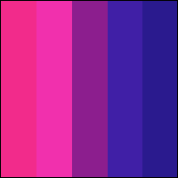
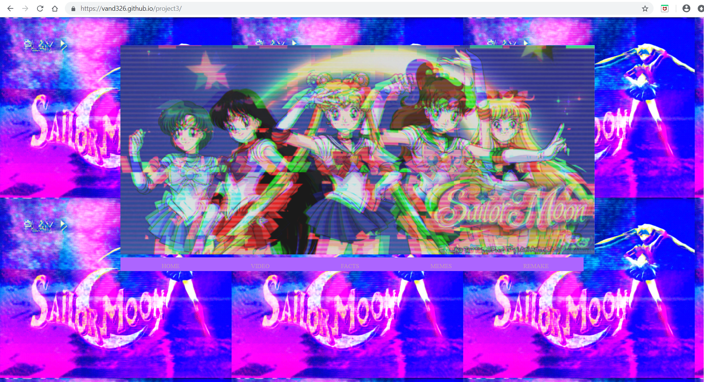

Vanna Dao Portfolio
I'm making this to host my portfolio for free.To learn more, read my artist's statement.
"Happy Birthday!", Digital Video, 2min. 32sec, 2018
This is an adventure on the day, we celebrated my friend's birthday. By recording everything with a DSLR camera and editing everything with Adobe Premiere.
"Go with The Flow", Digital Video, 6min.,2018
In this video, I was going with abstraction of the food dye color drops in the water. I want the viewers to feel any kind of emotions based on what they see. I did not include music because there is no certain emotion I want the viewers to feel. I used DSLR camera to record the food coloring drop inside a cup of water.

"Nostalgic",Net Art, 2018
I wanted to express my experience with internet on this website by adding old images and animations that I really enjoyed looking at when I was young. The colors, images, and animations represented how I felt when using the internet. Especially the window screensaver, that resembles how I kept searching through the browsers and wanting to explore more.
